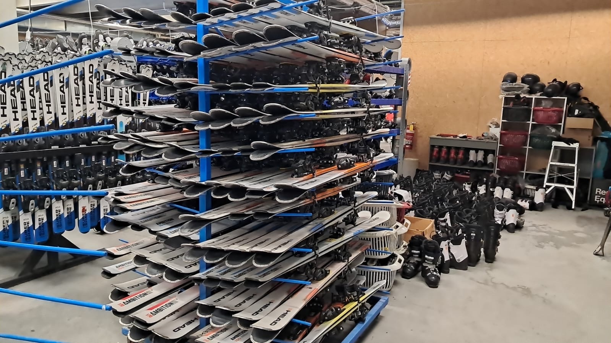
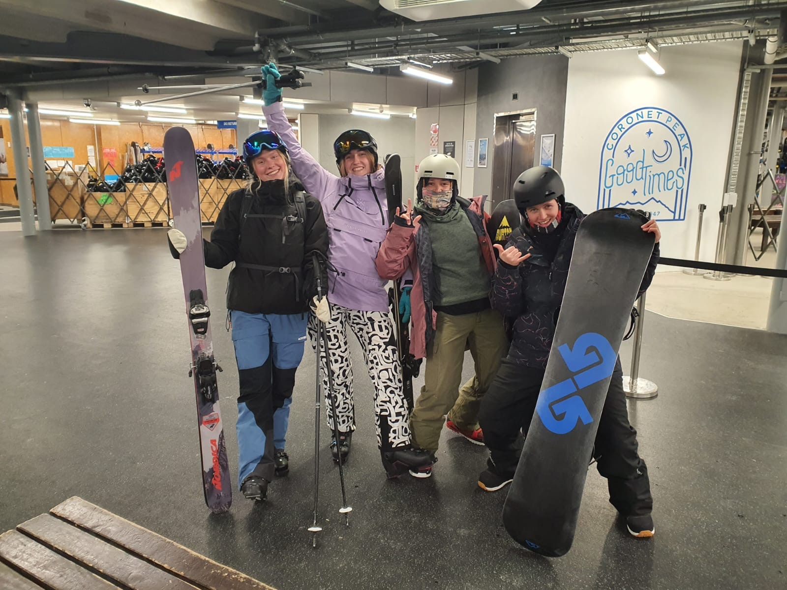

Current Role
Data Centre Technician
CBRE
June 2026 - Present
Work Experience
Current Role
CBRE
June 2026 - Present
Work Abroad
NZSki
June - October 2025
Professional Role
Sport Ireland
October 2023 - November 2024
Engineering Internship
Truma Geraetetechnik GmbH & Co. KG
March - August 2022
Engineering Internship
Intel Ireland
June - August 2019 and 2020
Early Leadership Role
Coolmine Sports
July 2015 - August 2018
Future Role
A graduate role in software development, technical project management or renewable energy, with an organisation where I can learn, grow and build things that are reliable and genuinely useful for years to come.
Current Role
Maintaining the power and cooling infrastructure behind a 24/7 mission-critical data centre in Dublin, where uptime is everything.
June 2026 - Present · Dublin, Ireland
Keeping the electrical and mechanical systems of a live data centre running safely and reliably, around the clock.
Planned preventative and reactive maintenance on UPS, power distribution units (PDUs), HVAC and utilities.
Monitoring environmental and energy performance through the BMS, and responding to alarms and faults as they happen.
Daily walkthroughs recording UPS, PDU and utility meter readings to spot issues before they become incidents.
Making sure third-party work meets procedures, safety standards and service agreements, and escalating performance issues.
Keeping accurate maintenance records and following strict safety, quality and regulatory processes on every task.
Work Abroad
Winter season in Queenstown, New Zealand, in a busy snowsports rental team.

June - October 2025 · Queenstown, New Zealand
Fitted and adjusted ski and snowboard equipment for guests of all abilities, making sure of safety, comfort and correct performance.
Maintained and organised rental gear, including basic tuning and repairs, as part of an international team through the peak winter rush.
Earned NZQCF Level 3 certificates in Alpine Resort Operations and Snowsports Equipment.

Professional Role
Anti-Doping Executive work spanning programme operations, competition support, and internal systems.
This role brought together operational coordination, programme delivery, and systems-based work within the Anti-Doping Unit.
I coordinated 4–5 anti-doping testing events a week and helped select which sporting events to test, managing logistics with event organisers and assigning 50+ Sample Collection Personnel.
I worked with 60+ national governing bodies and international organisations, including World Rugby, adapting plans quickly to changes in athlete details, staff availability and weather.
I also processed 200+ contractor invoices a month, tracked sample deliveries, and supported athlete education.
Engineering Internship
Power electronics internship redesigning heater control to give users finer control of heating power.
March - August 2022 · Munich, Germany
Earlier attempts at this concept had failed to meet regulatory standards. I got it through using software alone, with no hardware changes.
Replaced the electronic relay components in an existing heater design with a TRIAC.
Analysed existing circuit designs and developed an algorithm combining phase angle control, burst fire control and period averaging to optimise current output.
Successfully controlled the TRIAC and passed harmonic testing at a 2.2kW load.
Manufacturing Internship
Software development within Intel's manufacturing process engineering team, building tools to speed up and de-risk chip validation.
June - August 2019 and 2020 · Ireland
Two summer internships, the second completed remotely. I presented regular project updates to engineers and managers, building my communication and presentation skills.
2020: Developed a method in C# to validate minimum voltage requirements for transistors without silicon, reducing potential delays and debugging issues during first-silicon testing.
2020: Built a tool to generate simulated output responses for any Vmin search, improving the efficiency and accuracy of test programs.
2019: Worked in a team to create a new system giving product development engineers validation plans for test program features, and developed a C# feature that outputs those plans as formatted Word documents.
2019: Led a local youth outreach programme, teaching children about Intel's work through hands-on science experiments.
Early Leadership Role
Sports camp leadership and communication experience connected to coaching and teamwork.
Coolmine Sports section placeholder.
Volunteer Work
Volunteer and committee roles have also shaped my communication, leadership, and team support experience.
Canoeing Ireland
September 2019-2021
Trinity Kayak Club
May 2020-2021
Canoe Polo Ireland
Season 2022
Currently: Data Centre Technician at CBRE, and building my own software projects